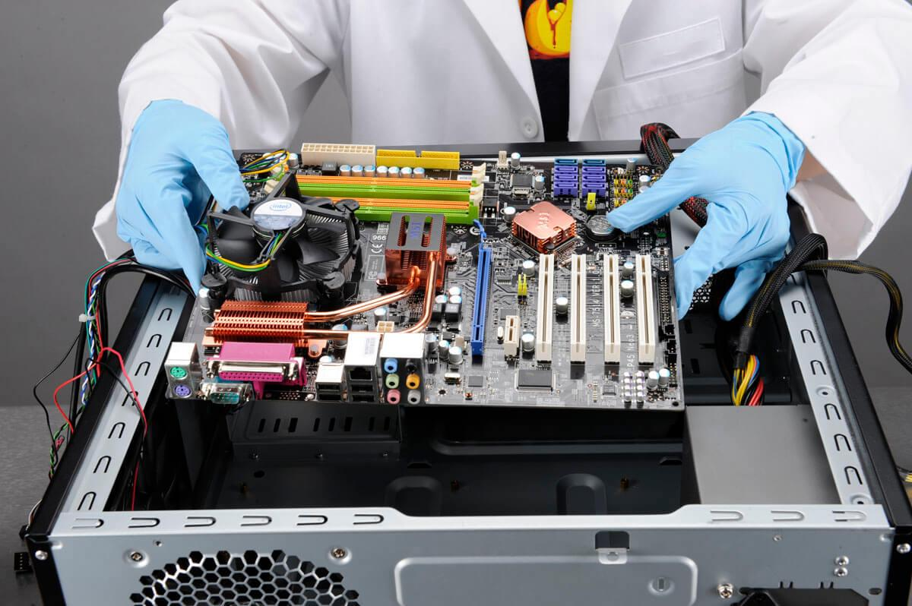

Архитектура

Архитектура компьютера – это его устройство и принципы взаимодействия его основных элементов – логических узлов.
Основные компоненты архитектуры ПК
Архитектура ПК (персонального компьютера) включает в себя несколько основных компонентов, которые работают вместе для обеспечения функциональности и производительности компьютера. Вот некоторые из основных компонентов архитектуры ПК:
Процессор, также известный как центральный процессор (ЦП), является “мозгом” компьютера. Он выполняет все основные вычисления и управляет работой других компонентов. Процессор состоит из нескольких ядер, которые могут выполнять инструкции параллельно, что повышает производительность компьютера.
Оперативная память (ОЗУ) используется для временного хранения данных и инструкций, которые процессор использует во время работы. ОЗУ является быстрым и доступным для процессора, поэтому он играет важную роль в оптимизации производительности компьютера.
Жесткий диск (ЖД) является основным устройством для хранения данных на компьютере. Он обеспечивает долгосрочное хранение файлов, программ и операционной системы. Жесткий диск имеет большую емкость, но работает медленнее по сравнению с ОЗУ.
Видеокарта является одним из ключевых компонентов компьютера, отвечающим за обработку и вывод графики на монитор. Она представляет собой специализированную плату, которая подключается к материнской плате и имеет собственную память и процессор.
Материнская плата является основной платой, на которой располагаются и взаимодействуют все компоненты компьютера. Она обеспечивает подключение процессора, ОЗУ, жесткого диска, видеокарты и других устройств к компьютеру.
При подключении устройств к системному блоку необходимо в первую очередь убедиться в совместимости разъемов и наличии соответствующих соединительных кабелей.
Также необходимо убедиться, допускает ли устройство "горячее подключение" или же для его включения ПК необходимо полностью выключить.
К устройствам "горячего подключения" относятся все USB устройства, FireWire, e-SATA, HDMI и некоторые другие.
Устройства с разъемами PS/2, COM, LPT, VGA, следует подключать только при выключенном компьютере - "на холодную". Если их подключать при включённом ПК, то можно сжечь не только само устройство, но и материнскую плату. ТВ тюнеры, а также ТВ выходы видеокарт, предназначенные для телевизионных антенн, и самих телевизоров, так же необходимо подключать при выключенном компьютере и телевизоре. Для порта VGA допускается подключение при включенном ПК, но выключенном мониторе/проекторе.
Звуковые устройства можно подключать "на горячую", но громкость динамиков при этом должна быть выкручена в ноль или, что лучше, они сами в момент подключения к ПК должны быть выключены.
<Вернуться на главную страницу>